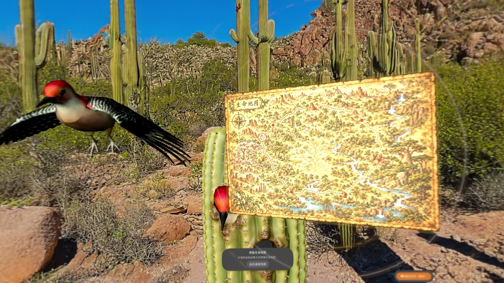
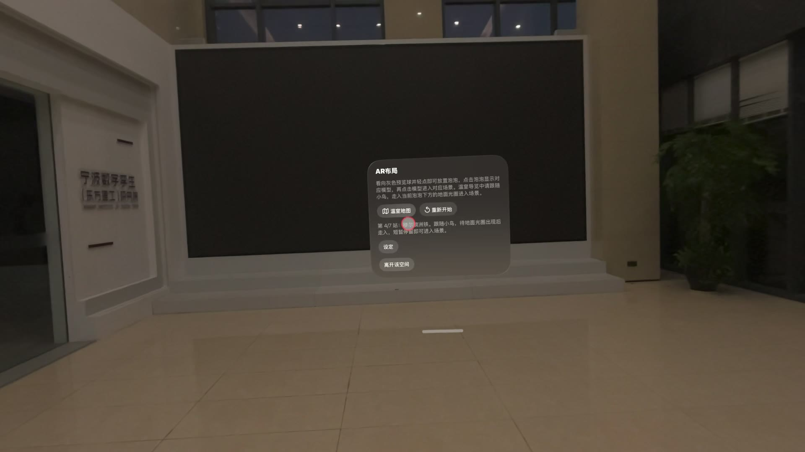
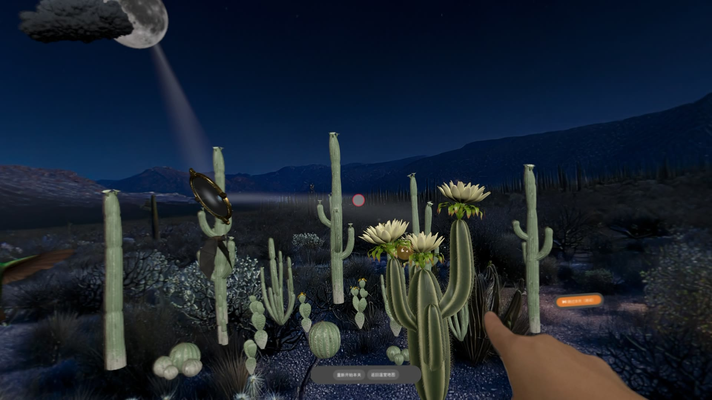

从泡泡，走进植物世界。
按应用内的当前提示操作， 一步一步，回到探索的节奏。
看向并放置泡泡
看向灰色预览球并轻点，在现实空间中放置泡泡。
轻点模型进入场景
轻点泡泡显示对应模型，再次轻点模型进入植物主题场景。
跟随小鸟继续导览
导览中等待地面光圈出现，安全地走入并短暂停留。
互动、重试与返回
按关卡提示完成互动，需要时重新开始本关或返回温室地图。

看向灰色预览球并轻点，依次选择泡泡和模型。

按当前任务提示进行互动；可重新开始本关或返回地图。
体验前请留出安全活动范围；需要跟随小鸟或地面光圈移动时，先观察现实环境，再缓慢前进。
开场剧情可以跳过吗？
可以。凤凰开场视频下方提供「跳过视频 · 进入第一关」入口，也可以使用画面中的暂停控制。想直接开始体验时，选择跳过并进入第一关即可。
怎样放置泡泡并进入植物场景？
在「AR布局」中看向灰色预览球并轻点，放置泡泡。轻点泡泡会显示对应模型，再次轻点模型即可进入对应场景。操作时先看向目标，再完成轻点确认，并留意当前界面的提示。
「温室地图」与「生命地图」有什么区别？
「温室地图」用于查看温室导览与植物站点；「生命地图」是植物场景中的关卡内容，演示中包含地图碎片等互动。它们不是同一个入口。想回到导览视图时，请使用场景中的「返回温室地图」。
跟随小鸟后，怎样通过地面光圈进入场景？
温室导览中先跟随小鸟并阅读当前站点提示。等待地面光圈出现后，在安全活动范围内缓慢走入，并短暂停留。不要快速穿过提示区域；若仍未进入，请重新查看当前站点说明。
关卡没有推进，应该重置哪一个入口？
先阅读当前关卡的任务提示。生命地图、光线与物件等互动会因场景而异。场景中的「重新开始本关」用于重试当前关卡；「返回温室地图」用于回到导览；AR布局面板的「重新开始」是布局流程中的另一个入口。
手势、按钮或模型没有响应怎么办？
先停稳并重新看向目标，确认当前场景是否还有未完成的提示步骤。使用手势时，让双手处于设备可识别的范围。如 visionOS 显示手部或周围环境权限请求，可根据提示自行选择授权，并在系统设置中管理。若问题持续，请记录设备与系统版本、场景及操作步骤。
剧情视频没有声音、卡顿或显示异常怎么办？
场景素材在本地播放。请先检查设备音量、声音输出位置和当前应用状态；可关闭其他占用资源的应用后重新进入体验。如果只有某段剧情或场景异常，反馈时请写明具体位置、应用与 visionOS 版本。
怎样退出当前体验？
在 AR布局面板中选择「离开该空间」，结束本次空间体验。场景里的「返回温室地图」用于返回导览，并不是关闭应用。
提交问题时，需要准备什么？
请准备设备型号、系统与应用版本（如可见）、当前站点或面板文字、操作步骤、预期结果与实际情况。截图可以帮助排查；空间画面可能包含现实环境，请先遮盖人脸、门牌、位置与其他私人信息。
没有匹配的问题。换个关键词，或在下方整理问题反馈。
一份有用的反馈，可以带上这些线索
截图可能包含你的现实环境。请先遮盖人脸、地址与其他私人信息。